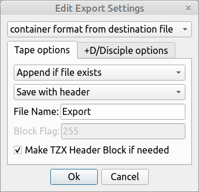

Welcome to the documentation of SpectrumTranslate. It is a module written in python that is designed to allow the user to translate files from a Spectrum computer into more useful formats. It is designed to be used by other python software as an imported module, but can also be used as a stand-alone command line program, or as a stand-alone graphical program that will work on any computer and opperating system that runs Python version 2.6 and later (including version 3). For the graphical program PyQt 4 or 5 is also required.
SpectrumTranslate consists of several modules that have different functions. They contain licencing informatio, help and guidance, but the most important ones are the modules which contain the code:
SpectrumTranslate-dev consists of several modules and files that together test any changes to SpectrumTranslate and are used to develop it. Unless you're developing or making changes to the code you shouldn't need them.
For all these modules you will need a working python environment. I have tested this code on python versions 2.6.5, 2.7.10, 2.7.11, 3.1.2, and 3.4.3 so it should work on most any non-ancient version of python. I have deliberately and painstakingly tried to ensure that it will run on versions 2 and 3 in the same way despite the variations between the versions.
If you run Linux then you probably will have python installed by default. If not then it almost certainly will be in your software package management system. If not go to the python.org site for instructions on how to install it.
If you run on windows then you probably won't have python installed, and will need to download the version apropriate to your computer from python.org. When installing I would recomend ensuring that pip is set to install in the customizing python section, and that add python.exe to path is also set. It will make life easier all round.
If you use apple software, I see no reason why it should not work, but I have no way of testing it and telling people about it. I would search the internet for how to install python.
Once you have python installed the basic modules and command line usage should just work in the directory you have them stored. Ensure that this directory is in the python include path if you want to include theses modules into other python programs, or just make sure that the files are in the same directory as the files that are going to include them. If you are using it as a standalone program it does not matter where you place it.
To run the Graphical interface (ie not via the command line, or writing software), you will also need to install PyQt.
There are two versions of PyQt available: 4 and 5, and spectrumfiletranslategui works with both so it should not matter which you have. If you have neither then you will need to install this also (also it needs a component called QtWebKit that is not installed by default in Linux with the main PyQt5 so if you are in Linux and are getting messages about being unable to find PyQt4 modules this might be the reason).
In Linux you need to install PyQt from your software center or repository. There will be several available, and you want the version that you want that matches the version of python you intend to use. The package names are basically python major version-qt major version. The version number of python comes after python (although it is usually ommited for version 2), and the PyQt version number always comes after the qt bit, although this can be qt or pyqt. For example in my system the PyQt5.5 package for python 2.7.10 is called python-pyqt5. If you are installing PyQt5 you will also need to install QtWebKit as well. The module name should be the same as for PyQt but have .qtwebkit at the end. So for Python 3.4.3, PyQt5.5, it would be python3-pyqt5.qtwebkit.
For Windows users, head to https://www.riverbankcomputing.com/software/pyqt/download the official website for PyQt, or https://sourceforge.net/projects/pyqt/ where the files are hosted and served from. You need to choose the download that gives you the instalation method you want for your computer architecture, for the version of python you have, and the version of PyQt you want to use. Unless you want to build it from source, choose the binary packages. Download, install, and you should be good to go.
As well as a working python environment as described above, you will need 2 other modules not included by default with a standard python instalation: pep8 for code formatting checks, and python image library for checks on graphics conversions. Python Image Library has been replaced in later versions by pillow.
Linux users can install them using pip if installed or using the software center or repository. If using pip then from the command line use pip install pep8 and pip install pillow. If installing from the software center or respository the package depends on which version of python you are using. I would advise to install both python2 and python3 versions so you can test in both environments to ensure any change is fully compatible. The packages are named python major version number-module name. The version number is usually omitted for python 2. So pep8 for python2 it's python-pep8, and pil (lower case intitials of python image library) for python 3 it's python3-pil. On some old systems there is no python-pep8 package I could find, but the pep8 package seemed to work just fine.
Windows users will need to use pip to install the packages. In a terminal run pip install pep8 and then pip install pillow.
The test code needs to be in a subdirectory of the SpectrumTranslate code to run it's tests properly.
SpectrumTranslate is designed to be used 3 ways: imported into other python programs, accessed from the command line, or via a graphical interface.
The command python spectrumfiletranslategui.py should fire up the graphical interface on any system with python 2 or 3, and PyQt 4 or 5 installed. You can run this from the command line, but it would probably make more sense to create a shortcut to the python executable file with spectrumfiletranslategui.py as the argument. On Linux you can also run the graphical interface by just running the spectrumfiletranslategui.py code without the python instruction before it so long as the file has execute permission. See below for an example of how to use the graphical interface. If set up correctly you chould be greeted with a window as below:
Most of the interface is fairly self explanatory, and I have tried to ensure helpful tool-tips wherever possible - just hover your mouse over a button or item in the interface to get these to pop up.
The Source File text box is where you can enter the filename for thr source to translate. It can be a container file like .tap or a disciple disk image, or just raw binary file of the spectrum data. The Browse button to the right of the text box allows you to use a file browser to select the file you want to translate.
Below the source file text box and browser, are two lines. The first line contains the data offset and Data End text boxes. For most files these indicate the offset in the selected file to the first byte to be translated, and the the last byte (inclusive) to be translated. If the source file is a disciple/+D image, the data might not be stored contiguously in the file, and the second line of text boxes is used to specify where to find the data to be translated. This specifies the filenumber to get data from, and the offset in the file data to start translating. Note that several file types in the disciple/+D disk format contain a 9 byte headder, which needs to be skipped, which is the purpose of the offset in image file box.
Top right is the "Browse contents" Button, but it can change to "Browse TAP" or "Browse disk image" depending on the source file. It is greyed out if no source file is selected. It allows the user to browse the contents of a container file and either select a file, or part of a file as the source to translate. When a file or part of file is selected, the text boxes detailing the offset/end, or file number/offset are automatically filled in.
Below this is the "Browse Hex" button. this is greyed out until a source file is selected. Clicking on this will open a window displaying the source file in hexadecimal and ASCII. On the left of the window is the offset to the current start of the line of bytes being displayed in Hexadecimal notation. In the center are the hexadecimal representations of the bytes of the source file, and on the right are the ASCII representations of the data. The data to be translated is highlighted in dark grey. To change the selection, select the select start radio button at the bottom, and click on the first byte you want to translate. Select the select end radio button at the bottom and click to select the last byte to be translated. Clicking Ok takes the start and end points and fills in the data offset, and Data End fields in the main window. Cancel exits without changeing the selected data.
Below the lines where you specify the data you want to translate is the Extract As box. This allows you to select what you want to treat the data as when translating. This will be set automatically when the data to translate is chosen via the Browse TAP or Browse disk image windows. Otherwise you'll have to set it yourself. Of note is the Raw Data option. This simply takes the specified data and is usefull for copying a file from one container file to another or output of a compiler to a spectrum code file ina container.
To the right of the Extract As option is the Number Format box. This specifies what format all the number in this program are displayed as. It defaults to Hexadecimal by default.
In the center of the main window is the area that deals with any variables that are specific to the data you want to translate. These change depending on the Extract As setting above, and are automatically set when the source data is selected useing either the Browse Tap or Browse disk image windows. These are mostly self explanatory. The Variable offset option in a BASIC file specifies the offset into the selected data where the program listing finishes and the variable listing starts. Let the program fill this automatically or leave it blank unless you know what you are doing. The XML output option specifies that you want the translated output to be in XML format, otherwise it defaults to text output. The most notable option is the Custom Instructions button for translating machine code, which is detailed after the rest of the details of the main window.
At the bottom of the main window are option for saving the output of the translation. On the left are the checkboxes specifying whether you want to view the output, and whether you want to save it. This allows you to check the output of a translation before deciding if you want to save it or not. The Destination File text box, and the browse button allow you to specify where you want to save your output. At the bottom is the Translate button, but the text can vary depending on whether you're extracting data as raw data. Press this when you're happy with your settings, and are ready to translate the selected data.
Lastly is the Export file to Container checkbox. This allows you to specify that you want the extracted data to be saved off to a contaner file. If selected, then the Export Settings button becomes active and allows you to edit your export options.
At the top of the Export Settings window is what type of file type to save as: As a TAP file, as a disciple/+D image, or to determin the file type from the selected output file (it ignores the file extension, and works out the file type from it's contents). Below this are tabs for the options for the different container formats.
For TAP files, you can specify if you want to overwrite an existing tap file, or append the new file to the end of the existing files in a tap file. You can save the data as a headderless data block in which case the data block flag is taken from the Block Flag box, or you can save it with a headder (as if you were loading or saveing from inside spectrum basic). In this case the filename to use is taken from the Filename text box, and any aditional file attributes (like autoload, code origin, variable name etc) are taken from the relavent boxes in the main window.
For +D/disciple disk images you must specify the filename. You can choose where to save the file with the top button: overwrite (if the filename doesn't exist it will save it to the first empty slot), save it at a specified directory entry position (as specified by the target slot box), or save it to the first empty slot regardless of whether the filename is already used by another file.
This window allows the user to create and edit custom instructions for translating machine code into human readable text or xml. The default settings will work perfectly fine just to get a machine code listing. However if you need data displayed in a certain way within machine code, or need special formatting, or commenting then this window allows you to do this.
On the right of the window is a list of all the commands. When these commands are executed, the disassember will order them by their start address, and so they will not nescesarily be processed in the order they are listed. Also it is worth noting that commands with a start address of 0, and an end address of 10000 hexadecimal are used to denote default settings used as the base of the whole translation (but can also be overwritten by local settings). It is also used for commands where the whole code is examined for matches such as Pattern Data Blocks, or Comment Pattern commands.
On the left are the editing buttons. At the top are load and save which allows you so save a list of instructions off as a text file, or to load a previously saved list of instructions. Then come buttons to delete the selected command, create a new command, move the selected file up the list of commands, or down the list. Sort instructions orders the instructions in the order that they would be executed by the disassembler. Below this is a button to select the number format in this window and it's child windows independent of the formatting of the main window. Below this is a button the allows you to change the function of the command, and below this you can specify the start and end addresses of the command. Under this is the Edit data button. This will open up windows to edit commands that require extra information.
The help button at the bottom opens a help file about the various instructions, what they do, and how the scripting language used for custom data blocks, pattern data blocks, and Comment Pattern instructions.
Each of the disciplefile.py, spectrumtapblock.py, and spectrumtranslate.py can be run as commands from the command line using python. They all require extra arguments to do anything, and if run without arguments will list details of how they work. For example python spectrumtranslate.py will list details of how to use spectrumtranslate from the command line.
Under linux, you can omit the python if you want and simply type spectrumtranslate.py as all the python module files that are runable from the command line have an instruction on their first line to tell linux to use python to run it automatically. If this doesn't work then open the python file in a text editor and ensure the name and path to your python command on the first line is correct, and that the execute permission is enabled for that file (for example use chmod +x spectrumtranslate.py to do this for spectrumtranslate.py. You might need root user privalages to do this). All examples here are listed with python before the module file as this will work on all platforms.
When using the command line, you must specify the command as the first argument after the python module. The last two arguments should be the source data file, and then the destination file unless you are getting information from the standard input, or sending it to the standard output. To specify that you are getting the input from the standard input rather than the input file, use the -i or --fromstandardinput flags. If you want to send the output to the standard output rather than an output file, then use the -o or --tostandardoutput flags.
Example for the command line usage are: disciplefile examples, spectrumtapblock examples, spectrumtranslate examples, and advanced examples.
To operate on disciple/+D image files use the disciplefile.py file. It has the following options one of which must be specified as the first argument:
list - this will list the contents of the specified image file.delete - will output a copy of the input image with the specified files deleted.extract - extracts the data from an image file entry to wherever you want.copy - copies the specified file(s) from one image to another.create - creates a new file in outfile using the supplied file data.With copy, create, and delete a new disk image will be created if outfile is not an image file.
For the extract instruction, the index of the image file you want to extract must be specified before the filenames.
For the delete and copy instructions, the index of the file in the disk image you want to copy or delete must be specified before the filenames. You can have ranges of indexes if you want to delete or copy more that one file from the image. The syntax is the same as for the -s flag. You can use the -s flag in the instruction in which case you should not specify a file index before the input or output files.
If using the create instruction, you must specify what you are creating imediatly after the create instruction. Valid options are basic, code, array, and screen. You must also specify the filnename for the file with the --filename flag. If creating an array, you must also specify the name and type of array with the --arraytype and --arrayname flags.
-o--tostandardoutput-o.-i--fromstandardinput-i.-slist and delete commands.--specifyfiles-s.--specificfiles-s.-d--details-d.-l--listempty-l.-c--capacity-c.-ck-c but number of free K on disk is listed. If the number seems odd then remember that only 510 bytes can be fitted in per sector.-cs-c but number of free sectors on disk is listed.-p--pos-p.--position-p.--filename--autostart--variableoffset--donotoverwriteexisting-p flag. This flag overrides this so you can save a file into the next avalable slot without overwriting an existing file. It is possible but confusing to have more than one file with the same name.--origin--arraytypecharacter or c for a character array, number or n for a number array, and string or s for a string.--arrayname-p--pos-p.--position-p.python disciplefile.pypython disciplefile.py list -o games1.imgpython disciplefile.py list --details --listempty games1.img listing.txtpython disciplefile.py delete 1 games1.img games1.imgpython disciplefile.py delete -s 1-10,0x20 games1.img games2.imgpython disciplefile.py extract 3 games1.img code.binpython disciplefile.py copy --pos 11-20 -s1-10 games1.img games2.imgpython disciplefile.py copy --pos 11-15 -s1-10 games1.img games2.imgpython disciplefile.py copy --pos 11-20 1 games1.img games2.imgpython disciplefile.py create basic --filename TEST --autostart 10 basic.bin disk.imgpython disciplefile.py create code --filename TEST --donotoverwriteexisting --origin 0x8000 code.bin disk.imgpython disciplefile.py create array --filename ARRAY -p 10 --arraytype string --arrayname S -i disk.imgTo operate on tap files use the spectrumtapblock.py file. It moves data from infile which should be a tap file (or data to save as a file into a tap file) and outputs it to outfile. It has the following options one of which must be specified as the first argument:
list - this will list the contents of the specified tap file.extract - extracts the data from the tap file entry to wherever you want.copy - copies the specified file(s) from one tap file to another.delete - will output a copy of the input tap file with the specified files deleted.create - creates a new tap entry (as well as a headder if needed) in outfile using the supplied file data.For the extract instruction, the index of the tap entry you want to extract must be specified before the filenames.
For the copy and delete instructions, the index(s) of the tap entry(entries) you want to copy must be specified before the filename. You do not need to do this if you have already specified which entries you want with the -s flag.
If using the create instruction, you must specify what you are creating imediatly after the create instruction. Valid options are basic, code, array, screen, and block. You must also specify the filnename for the file with the --filename flag unless you are creating a data block. If creating an array, you must also specify the name and type of array with the --arraytype and --arrayname flags.
-o--tostandardoutput-o.-i--fromstandardinput-i.-slist, delete, and copy.--specifyfiles-s.--specificfiles-s.-d--details-d.-a-p--pos-p.--position-p.-a--autostart--variableoffset--origin--arraytypecharacter or c for a character array, number or n for a number array, and string or s for a string.--arrayname--flag-p--pos-p.--position-p.python spectrumtapblock.pypython spectrumtapblock.py list -o games.tappython spectrumtapblock.py list -d games.tap listing.tappython spectrumtapblock.py delete 1 games.tap games.tappython spectrumtapblock.py delete -s 1-10,0x20 games.tap games2.tappython spectrumtapblock.py extract 10 games.tap code.binpython spectrumtapblock.py copy --pos 11 -s1-10 games1.tap games2.tappython spectrumtapblock.py create basic --filename TEST --autostart 10 basic.bin basic.tappython spectrumtapblock.py create code -a --filename TEST --origin 0x8000 code.bin basic.tappython spectrumtapblock.py create array --filename ARRAY -p 2 --arraytype string --arrayname S -i basic.tapTo convert data from spectrum formats to more usable formats such as text, XML, or images, use the spectrumtranslate.py file. It converts data from infile and outputs it to outfile, although you can get data from the standard input and output it to the standard output if you so wish. It is also used to create instructions to customize machine code disassembly. It has the following options one of which must be specified as the first argument:
basic - this will treat the input data as a basic listing and convert it to xml or text.code - this treats the input data as code and will disassemble it. There are lots of options to modify the output or parts of the output if needed.screen - this treats the input as a 6912 byte screen memory dump, and will convert it to RGB data or a gif image.text - this will treat the input as spectrum text (including character codes) and will output it as it would appear if printed in a spectrum.array - this converts the data that is assumed to be an array or string into xml or text format.instruction - allows you to create or change instructions for the code disassembler. The input and output are string arguments for creating disassemble instructions. Unless flags are used to indicate otherwise, it is assumed that there is one instruction per line. The format of the instructions are the code in hexadecimal, followed by a '#', followed by the start address in hexadecimal where it applies, followed by another '#', followed by the address in hexadecimal after it applies, followed by '#', followed if extra data is needed by a comma seperated list of the offset to any new lines in the extra data followed by another '#', followed by the extra data without any newline characters. More information about the instructions can be found here.-o--tostandardoutput-o.-i--fromstandardinput-i.-x--xml-x.-a--ascii-a.-k--skip-k.--l--len-l.--length-l.-s-s option is not required.--start-s.-v-v option is not required and if not present, it is assumed that there are no variables with the BASIC program. use -1 if there are variables and you want the translator to work out where they start.--variableoffset-v.-tnumber, character, or string depending on the type of array.--type-t.-d--dimensions-d.-g--gif-g.-f--flashrate-f.-b--base-b.--baseaddress-b.-cf or s (or si) for file input or standard input as the source of the special instructions. If file input is specified then it must be followed by the filename of the special instruction data file. If s or si is specified and the -i flag is being used then the special instructions must be passed first and be ended by a single empty line before the code to disassemble is passed through the standard input.--commands-c.-m--multiline-m.--mi-m flag but indicates that only the input is multiline.--multilinein--mi.--mo-m flag but indicates that only the output is multiline.--multilineout--mo.-n--namewanted-n.python spectrumtranslate.pypython spectrumtranslate.py basic program.bin program.txtpython spectrumtranslate.py basic -x -a program.bin program.xmlpython spectrumtranslate.py array -t character array.bin array.txtpython spectrumtranslate.py array -t character --xml array.bin array.xmlpython spectrumtranslate.py array -d -t character -o --skip 0x18 array.tap--skip flag is used to bypass the file headder data in the tap file as well as the tap file entry length, and flag for the array data, jumping to the actual data in the file. Also note that I've not needed to use the -l flag to specify how many bytes of data to use as the length of an array can be worked out from first few bytes of the array data, so supplying more data than needed isn't a problem.python spectrumtranslate.py text -o -a array.binpython spectrumtranslate.py screen -g screen.bin screen.gifpython spectrumtranslate.py screen -g -f -1 screen.bin screen.gifpython spectrumtranslate.py screen -g -f -2 screen.bin screen.gifpython spectrumtranslate.py screen -g -f 640 screen.bin screen.gifpython spectrumtranslate.py code -b 0x8000 code.bin code.txtpython spectrumtranslate.py code -a -c f instructions.txt code.bin code.txtpython spectrumtranslate.py instruction --mi -i instruction.txtpython spectrumtranslate.py instruction -o -n --mo instruction.txtThese exmples combine the various command line commands with concepts like pipes, and are only available on systems with advanced shells like linux. I gather MacOS has a shell that could do something similar, and there are instalable shells for windows that emulate pipes.
python spectrumtapblock.py extract -o 1 basic.tap | python spectrumtranslate.py basic -i -opython disciplefile.py list -o -d diskimage.img | awk 'BEGIN{FS="\t"}{sub(/[ ]*$/,"",$2); printf "python disciplefile.py extract %i diskimage.img \"%02i%s.bin\"\n", $1, $1, $2;}' | bashdisciplefile.py, spectrumtapblock.py, spectrumtranslate.py, and spectrumnumber.py are designed to be used in the python programming language by including them in any other software. They either need to be in the python sys.path list or in the same directory as the code that's including it. I won't go into detailed explanation of each function as this is available in the source code at the start of each function, or by using help(module.functionname) either at the interactive python shell, or by printing this in a program. You can also use the dir function to list all the functions in a module or a class. I will only list an overview of the functions below. There are some examples below the function overview. I have also omited functions and classes designed for the internal usage of this package.
GetDirectoryEntryPosition(num)DiscipleFile classA class to handle individual entries in a DiscipleImage. Create with: DiscipleFile(DiscipleImage, filenumber).
filenumberimagegetarraydescriptor([headderdata])getautostartline([headderdata])getcodestart([headderdata])getdisciplefiledetails([headderdata])getfiledata([wantheadder [,headderdata]])getfiledetails([headderdata])getfiledetailsstring([headderdata])getfilelength([headderdata])getfilename([headderdata])getfiletype([headderdata])getfiletypecatstring([headderdata])getfiletypestring([headderdata])getheadder()getrawfilename([headderdata])getsectorsused([headderdata])getsnapshotregisters([headderdata])getvariableletter([headderdata])getvariablename([headderdata])getvariableoffset([headderdata])isempty([headderdata])DiscipleImage classA class to encapsulate an image of a +D/Disciple disk image. use DiscipleImage([filename[, accessmode]]).
bytedatafilehandleImageFormatUnknown, MGT, and IMG.ImageSourceUndefined, File, FileName, and Bytes.deleteentry(entrynumber)fileindexfromname(filename[, wantdeleted])get_offset_and_bit_from_track_and_sector(track, sector)getsector(track, sector[, head])getsectorposition(track, sector[, head])guessimageformat()isimagevalid([deeptest])iteratedisciplefiles()setbytes(bytedata[, form])setfile(filehandle [,form])setfilename(filename[, form[, accessmode]])setimageformat(form)writearrayfile(filedata, filename, VariableDescriptor[, position[, overwritename]])writebasicfile(filedata, filename[, position[, autostartline[, varposition[, overwritename]]]])writecodefile(filedata, filename[, position[,codestartaddress[, overwritename[, coderunaddress]]])writefile(headder, filedata[, position])writescreenfile(filedata, filename[, position[, overwritename]])writesector(self, data, track, sector[, head])createarrayheadder(filename, VariableDescriptor, ArrayLength)createbasicheadder(filename, VariableOffset, ProgLength[, AutoStart])createcodeheadder(filename, Origin, Codelength)createdatablock(data[, flag])createscreenheadder(filename)gettapblockfrombytes(data[, position])gettapblockfromfile(tapfile[, position])gettapblocks(tapfile[, position])tapblockfrombytes(data[, position])tapblockfromfile(filename[, position])SpectrumTapBlock classA class to handle individual entries in a tap file. Create with: SpectrumTapBlock([flag[, data[, filePosition]]).
datafilePositionflaggetdatastartoffset()getfiledetailsstring()getfilename()getfiletypestring()getheadderarraydescriptor()getheadderautostartline()getheaddercodestart()getheadderdescribeddatalength()getheaddervariableletter()getheaddervariablename()getheaddervariableoffset()getpackagedforfile()getrawfilename()isheadder()savetofile(filename[, append])Several of the functions defined in spectrumtranslate use two variables to pass information relating to the disassembly process, and control the process. They are:
SettingsADDRESSOUTPUT - The number format to use when outputing addresses (0 for Hexadecimal, 1 for decimal, 2 for octal, and 3 for binary).COMMANDOUTPUT - The number format to use when outputing bytes of a command (0 for Hexadecimal, 1 for decimal, 2 for octal, and 3 for binary).COMMENTCONTROL - A list of variables used to control comment output. The entries are:DATASTRINGPOS - Where we are in the script that's being used to interprate the data block.DISPLAYEVERYXLINES - How many lines to pass before garunteeing the address is listed.HadLineEnd - To keep track if the current line of data has had it's line ended.HadLineStart - To keep track if the current line of data has had it's line started.HexForNonASCII - True if you want to disassembler to print a character out as a hex code if it's not an ASCII character rather than the spectrum version of that character.InstructionsToAdd - A list of instructions to add to the work list. Only will be reliably processed if done in a test or preperation block of a Pattern Data Block or Comment Pattern instruction.LINEAFTERDATA - Do you want a blank line after this data block, or not. If not in Settings then the default formatting option for this is used.NUMBERFORMAT - The number format to use when outputing a number (0 for Hexadecimal, 1 for decimal, 2 for octal, 3 for binary, 4 the same as for addresses, 5 the same as used by numbers, and 6 the same as used by command bytes).NUMBEROUTPUT - The default number format to use when outputing numbers (0 for Hexadecimal, 1 for decimal, 2 for octal, and 3 for binary).NUMBERSIGNED - 0 if numbers are to be treated as unsigned, and 1 if they are signed.NUMBERWORDORDER - 0 if numbers are little endian, and 1 if they are big endian.ORIGIN - The address of the first byte of the supplied data.ORIGIONALSEPERATOR - The current default seperator.ReferencedLineNumbers - A list of addresses that are referenced and so should be listed in the output.SEPERATOR - The current seperator.XMLOutput - 0 if normal text output, 1 if is XML.Vars0-9 - These are the user variables, but in some cases are used to hold important values as in the test and preperation blocks of Pattern Data Block or Comment Pattern commands.10 - The address of the start of the current line.11 - The line number in the current data block.12 - The offset in bytes from the start of the current line to the current position.13 - The address of the start of this data block.14 - The address of the last byte in the data block.15 - The address of the current byte being disassembled. This doesn't realy exist. In the script interpreter any reference to entry 15 in Vars if translated to entries 10 and 12.arraytotext(data, descriptor[, hexfornonascii])arraytoxml(data, descriptor[, hexfornonascii])basictotext(data[, iAutostart[, ivariableOffset[, hexfornonascii]])basictoxml(data[, iAutostart[, ivariableOffset[, hexfornonascii]]])chartospectrum(c)CODE ' is a valid string representation of a single character.createfindandcomment(test, comment, commandlength, position)Comment Pattern instruction.detailsfromfindandcomment(code)Comment Pattern instruction.disassemble(data, offset, origin, length[, SpecialInstructions[, progressfunction]])extractarray(data, descriptor)get_comment_displacement_string(displacement, flag, comment)Comment Displacement instruction. Flag is a combination of 1 if you want to comment IX instructions, and 2 if you want to comment IY instructions using the specified displacement.get_comment_displacement_values(data)get_comment_reference_string(reference, flag, comment)Comment Reference instruction. Flag is a combination of 1 if you want to comment instructions accessing the referenced address, 2 if you want to comment instructions loading the referenced number or address into a register, 4 if you want to comment calls to the referenced address, and 8 if you want to comment jumps to the referenced address.get_comment_reference_values(data)get_custom_format_string(AddressOutput, NumberOutput, CommandOutput, OutputTStates, BreakAfterJumps, LineNumberOutput, ListEveryXLines, BreakAfterData, TreatDataNumbersAsLineReferences, DisplayCommandBytes, DisplayComments, Seperator, ShowFlags, MarkUndocumenedCommand, XMLOutput, HexForNonASCII)Custom Format instruction.get_custom_format_values(data[, bWantInstructionCode])Custom Format instruction.get_disassembleblockname_from_value(value)get_disassemblecodename_from_value(value)getarraydepth(data, descriptor)getgiffromscreen(data[, delay])getpartsofpatterndatablock(pdb)Pattern Data Block instructions data into the search commands, setup commands and action commands.getrgbfromscreen(data, [alphamask[, imageformat]])getspectrumchar(c[, hexfornonascii])getspectrumstring(s[, hexfornonascii])getvariableoffset(data)instructiontexttostring(instructiontext)isfindandcomment(instructions)Comment Pattern instruction.PredefinedEndLine(Settings, Vars)PredefinedStartLine(Settings, Vars, datatitle)snaptosna(data, register[, border])snaptoz80(data, register[, version[, compressed[, border]]])stringtoinstructiontext(text)stringtospectrum(s[, wantcommands])SpectrumTranslateError classA class to represent an error being rasied by a spectrum translate module. Create with: DisassembleInstruction(arg) where arg is the text description of the error.
DisassembleInstruction classA class to encapsulete instructions for the code disassembler. Create with: DisassembleInstruction(arg[, start[, end[, data]]) where arg is the name of an instruction, or it's code, or another DisassembleInstruction.
DISASSEMBLE_CODESDISASSEMBLE_DATABLOCK_CODESDISASSEMBLE_PATTERNBLOCK_CODESPredefinedFunctionsPredefinedRoutinesdataendinstructionstartdisassembledatablock(Settings, data)isformatinstruction()Abs(sn)Add(sn1, sn2)Divide(sn1, sn2)E_to_FP(sn, exponent)get_SpectrumNumber_from_string(s)GreaterThanZero(sn)Int(sn)IsZero(sn)LessThanZero(sn)Multiply(sn1, sn2)Negate(sn)Sign(sn)Subtract(sn1, sn2)toString(sn)Truncate(sn)SpectrumNumber classA class to emulate a 5 byte spectrum number. Create with: SpectrumNumber([data[, listContainsSignedBytes]]) where data is another SpectrumNumber, int (or long in python 2), float, string representation of a number, or a list representing the internal bytes of a spectrum number. Can be forced to a complex number, float, int, or string using str(number_object) or float(number_object) for example. It also can be compared directly to other number types. Most of the usual commands that can be applied to other numbers like floats and integers apply so you can do for example number_object += 3.7, if(number_object == 5):, or x = int(number_object + 10)
SPECTRUM_NUMBER_COMPARISON_PRECISSIONMAX_VALUEMIN_VALUEdataAbs()Add(val)Divide(val)E_to_FP(exponent)getValue()GreaterThanZero()Int()IsZero()LessThanZero()Multiply(val)Negate()SetValue([[data[, listContainsSignedBytes])Sign()Subtract(val)truefloat()Truncate()There are a few examples below. I've list comments after the code blocks.
This example shows some usage of SpectrumNumber.
- from spectrumnumber import *
- sn1 = SpectrumNumber(20)
- sn2 = SpectrumNumber("4.78")
- print (str(sn1))
- print (int(sn2))
- print (float(sn1 + sn2))
- print ("{0}".format(sn2))
- sn1 *= 100
- print (sn1)
- print (IsZero(sn1))
The output is:
20
4
24.78
4.78
2000
False
Line 1 imports all parts of spectrumnumber into this program's namespace. You could use import spectrumnumber and then use them like sn1 = spectrumnumber.SpectrumNumber(20) which although longer keeps the namespace less crowded and avoids name conflicts. Another way would be to use import spectrumnumber as SN and then sn1 = SN.SpectrumNumber(20)
Lines 3 and 4 show that you can use different arguments to construct a SpectrumNumber. You can also use floats, or other SpectrumNumber objects.
Lines 6 to 8 show you can convert a SpectrumNumber to other forms.
Line 8 and 11 show that you can use standard operators on SpectrumNumbers.
Line 9 and 13 show SpectrumNumber being interprated by the python interpreter as inputs to other standard functiuons.
This one could be run as a program but this example is from the interactive python shell as started by python. The '>>>' and '...' simply represent the interpreter command prompt and don't need to be copied in.
- >>>import spectrumtapblock as STB
- >>>import spectrumtranslate as ST
- >>>
- >>>for stb in STB.tapblockfromfile("test/arraytest_number.tap"):
- ... if(stb.isheadder()):
- ... print (str(stb) + " = headder containing " + stb.getfiledetailsstring())
- ... else:
- ... print (stb)
- ...
- Flag:0, block length:17 = headder containing "x " Number array X
- Flag:255, block length:1005
- >>>blocks = STB.gettapblocks("test/arraytest_number.tap")
- >>>array = ST.extractarray(blocks[1].data, blocks[0].getheadderarraydescriptor())
- >>>print(type(array))
- <type 'list'>
- >>>print(len(array))
- 20
- >>>print(type(array[0]))
- <type 'list'>
- >>>print(len(array[0]))
- 10
- >>>print(type(array[0][0]))
- <type 'instance'>
- >>>print(array[0][0])
- 0.1
Lines 1 and 2 are where the relavent modules are imported us ing the as keyword to slightly shorter names.
Line 4 is where an itterator is created to iterate through the tap blocks in the tap file.
Lines 5 to 9 are what to do with each itteration: print out the basic details of the tab block or also the details if it represents a headder. Line 9 is an empty line there to tell the interactive interpreter that we have come out of an indented declaration.
Lines 10 and 11 are the output from itterating through the tap file. It shows that we have a headder entry to a number array, followed by a data block that is the data of that array.
Line 12 shows how all tap block entries can be extracted in one go, in this case saved in a variable called blocks.
Line13 is where we extract the data to a variable called array. The raw data of the array in the data tap block is extracted with the data attribute, and the array descriptor is in the headder tap block.
Line 14 tells you what array it is. It is possible if there has been a string saved as an array that this could be a string object rather than a list.
Lines 16 to 22 delve deeper into the list and any sub-lists until we reach an object or number. The output on line 23 informs us that we have reached a SpectrumNumber object. You could have used the getarraydepth function in the spectrumtranslate module to work out how deep this array would be.
Line 24 print out the content of one of the array entries.
This example shows how this module can be used to move files from a disk image to a .tap file.
- import spectrumtapblock as STB
- import disciplefile as DF
- di = DF.DiscipleImage("test/diskimagetest.img")
- for df in di.iteratedisciplefiles():
- if(df.isempty()):
- continue
- filename = df.getrawfilename()
- data = df.getfiledata()
- if(df.getfiletypestring() == "Basic"):
- tapheadder = STB.createbasicheadder(filename, df.getvariableoffset(), len(data), df.getautostartline())
- elif(df.getfiletypestring() == "Number Array" or df.getfiletypestring() == "String Array"):
- tapheadder = STB.createarrayheadder(filename, df.getarraydescriptor(), len(data))
- elif(df.getfiletypestring() == "Code"):
- tapheadder = STB.createcodeheadder(filename, df.getcodestart(), len(data))
- elif(df.getfiletypestring() == "SCREEN$"):
- tapheadder = STB.createscreenheadder(filename)
- else:
- print("Can't convert {0} file in entry {1}.".format(df.getfiletypestring(),df.filenumber))
- continue
- tapheadder.savetofile("copy.tap", append=True)
- tapdata = STB.createdatablock(data)
- tapheadder.savetofile("copy.tap", append=True)
Lines 1 and 2 import the needed modules.
Line 4 creates a DiscipleImage to work from.
Line 6 itterates through the DiscipleFile entries in the disk image.
Lines 7 and 8 skip empty entries.
Lines 10 to 19 get the data from the DiscipleFile entry and generate an apropriate headder SpectrumTapBlock object.
Line 20 to 22 handle files that can't be saved to a tap file.
Line 24 appends the headder to the file copy.tap.
Lines 25 and 26 generate the data part of the file and appends this tap block also.
This example shows how to save a screen image off as a jpeg file.
- import spectrumtranslate
- from PIL import Image
- with open("test/screentest.dat", 'r') as f:
- data = f.read()
- rgbdata = spectrumtranslate.getrgbfromscreen(data, alphamask=-1, imageformat=1)
- data0 = [tuple(x) for x in rgbdata[0]]
- im0 = Image.new('RGB', (256, 192))
- im0.putdata(data0)
- im0.save("x0.jpg")
Line 1 imports spectrumtranslate, and line 2 imports the Image object from the Python Image Library.
Lines 4 and 5 load the data from a spectrum screen dump into a variable called data.
Line 7 converts the screen data to a list of 2 image data: offset 0 for non-flash, and offset 1 for the flash state (which will be None if there is no flash in the image. Each image data will be a list of 256 * 192 entries: one for each pixel in the spectrum screen. imageformat specifies that we want each image data pixel data entry to be a list of values for Red, Green, Blue (but not Alpha as the alphamask is -1).
In line 8 we extract the image data for offset 0 (the image without the colours in the flash state), and convert each pixel entry to a tuple from a list. getrgbfromscreen returns each pixel RGB value as a list as it is easily changable, but the putdata method of an Image object requires the image data to be imutable hence the tuple change.
Line 9 creates a new Image object of the right size and RGB colour mode.
Line 10 sets the image data.
Line 11 saves the image off as a jpeg image file. You can specify the file type but if you don't it does so based on the filename extension as it does here.
This big example shows how to interact with the diasassemble function using python. This will disasseble the machine code for the Colony game, and comment in more detail the routine at 0xD641 that displays the status area at the top of the screen. You will need the Colony.tap file from the GUI example to run this example.
- import spectrumtranslate as ST
- import spectrumtapblock as STB
- def Createcomments(address, comment):
- return [ST.DisassembleInstruction("Comment", address, address, comment),
- ST.DisassembleInstruction("Comment Reference", 0, 0xFFFF, "{0:04X}C{1}".format(address, comment))]
-
- def CreateComment(address, comment, before=False):
- return [ST.DisassembleInstruction("Comment" if not before else "Comment Before", address, address, comment)]
-
- def CreateDataBlock(start, end, datatype, form=0):
- return [ST.DisassembleInstruction("Data Block", start, end, "%!{0}(Format={1})".format(datatype, form))]
-
- def CreateDataList(start, end, maxperline=1, datatype=0):
- return [ST.DisassembleInstruction("Data Block", start, end, "%!DefineByte(Format={0},FormatIdentifyer=False,MaxPerLine={1})".format(datatype, maxperline))]
- def FindAndCommentAndDM0(data, Settings, Vars):
- pos = Vars[0x0A]
- origin = Settings["ORIGIN"]
- l = len(data)
- args = bytearray([0xCD, 0X23, 0xC1])
- while(pos <= Vars[0x0E] and pos - origin < l):
- n = pos - origin
- if(data[n:n + 3] == args):
- Settings["InstructionsToAdd"] += [
- ST.DisassembleInstruction("Comment", pos, pos, "Print Text"),
- ST.DisassembleInstruction("Data Block", pos + 3, pos + 3, "%PDefineMessage(DataType='0',Noncharoutofquotes=True)%F0502")]
- pos += 1
- return []
- ST.DisassembleInstruction.PredefinedRoutines["X"] = FindAndCommentAndDM0
- instructions = []
- instructions += [ST.DisassembleInstruction("Pattern Data Block", 0, 0xFFFF, "%(%!X()%)%(%)")]
- instructions += CreateComment(0x8000, "Run at #B732", True)
- instructions += [ST.DisassembleInstruction("Empty Line After Data Off", 0xB30A, 0xB30D)]
- instructions += CreateComment(0x9276, '"SHIELD/LASER"', True)
- instructions += CreateDataList(0x9276, 0x92B5, maxperline=4, datatype=3)
- instructions += CreateComment(0x92B8, 'bitmap for "Time/E.T.A."', True)
- instructions += CreateDataList(0x92B8, 0x92E7, maxperline=3, datatype=3)
- instructions += CreateComment(0x92EA, 'bitmap for beacon "OFF"', True)
- instructions += CreateDataList(0x92EA, 0x92F9, maxperline=2, datatype=3)
- instructions += CreateComment(0x92FC, 'bitmap for beacon "ON"', True)
- instructions += CreateDataList(0x92FC, 0x930B, maxperline=2, datatype=3)
- instructions += CreateComment(0x930E, 'bitmap for "Credits/Beacon"', True)
- instructions += CreateDataList(0x930E, 0x935D, maxperline=5, datatype=3)
- instructions += Createcomments(0xAF80, "HL=address of colour data for char just printed")
- instructions += Createcomments(0xAF89, "Reverse bits in A")
- instructions += Createcomments(0xAF94, "move HL down a pixel")
- instructions += Createcomments(0xAFA3, "move HL up a pixel")
- instructions += Createcomments(0xAFBB, "HL: pixel address->colour address")
- instructions += CreateComment(0xAFF1, "create Bold font from spectrum font")
- instructions += CreateComment(0xB010, "B(Y),C(X)->HL=screen address & A is bitmap for pixel at address")
- instructions += Createcomments(0xB01B, "B(Y),C(X)->HL=screen address & A pixels in address")
- instructions += Createcomments(0xB04D, "print B(bytes) by C(pixels) from DE to screen HL")
- instructions += Createcomments(0xB05F, "Move HL along A characters in screen")
- instructions += Createcomments(0xB287, "Print Text at HL to screen until hit 0")
- instructions += Createcomments(0xB299, "print A to screen saving HL'")
- instructions += Createcomments(0xB2CE, "Print A to screen")
- instructions += CreateComment(0xB30A, "Print position")
- instructions += CreateComment(0xB30C, "Print colour position")
- instructions += CreateDataBlock(0xB30A, 0xB30D, "DefineWord")
- instructions += CreateComment(0xB30E, "Print colour")
- instructions += CreateDataBlock(0xB30E, 0xB30E, "DefineByte")
- instructions += Createcomments(0xB30F, "Print pattern at DE to screen at HL")
-
- instructions += CreateComment(0xB326, "print AT")
- instructions += CreateComment(0xB332, "Set print colour")
- instructions += CreateComment(0xB33B, "Move to new line")
- instructions += CreateComment(0xB34C, "Set print pos to X,Y in BC")
- instructions += Createcomments(0xB388, "Print HL as decimal")
- instructions += CreateDataBlock(0xB40A, 0xB40B, "DefineWord")
- instructions += Createcomments(0xB40C, "convert char X(H),Y(L) to screen position in HL")
- instructions += CreateComment(0xC109, "Clear black line above & below shiled & laser bars")
- instructions += CreateComment(0xD112, "setup font")
- instructions += CreateComment(0xD612, 'bitmap for info area borders', True)
- instructions += CreateDataBlock(0xD612, 0xD619, "DefineByte", form=3)
- instructions += CreateDataBlock(0xD61A, 0xD621, "DefineByte", form=3)
- instructions += CreateDataBlock(0xD622, 0xD629, "DefineByte", form=3)
- instructions += CreateDataBlock(0xD62A, 0xD631, "DefineByte", form=3)
- instructions += CreateDataBlock(0xD632, 0xD639, "DefineByte", form=3)
- instructions += CreateComment(0xD63A, "Set shield & laser bar colours")
- instructions += Createcomments(0xD641, "setup info area at top of screen")
- instructions += CreateComment(0xD64C, "Set info area on screen to bright yellow on black")
- instructions += CreateComment(0xD64E, "Set shield & laser bar colours")
- instructions += CreateComment(0xD669, "Clear black line above & below shiled & laser bars")
- instructions += CreateComment(0xD66C, "set colours of held item boxes")
- instructions += CreateComment(0xD697, 'print info area border')
- instructions += CreateComment(0xD6D9, 'print "droid power"')
- instructions += CreateComment(0xD71C, 'print "Credits/Beacon"')
- instructions += CreateComment(0xD73F, 'print "TIME/E.T.A."')
- instructions += CreateComment(0xD76F, 'print beacon status')
- instructions += Createcomments(0xD79C, "set HL,B to A")
- instructions += CreateComment(0xD7A1, 'bitmap for "droid power"', True)
- instructions += CreateDataBlock(0xD7A1, 0xD7A8, "DefineByte", form=3)
- instructions += CreateDataBlock(0xD7A9, 0xD7B0, "DefineByte", form=3)
- instructions += CreateDataBlock(0xD7B1, 0xD7B8, "DefineByte", form=3)
- instructions += CreateDataBlock(0xD7B9, 0xD7C0, "DefineByte", form=3)
- instructions += CreateDataBlock(0xD7C1, 0xD7C8, "DefineByte", form=3)
- instructions += CreateDataBlock(0xD7C9, 0xD7D0, "DefineByte", form=3)
- instructions += CreateComment(0xD7D1, "print data at DE to HL, move right, next data")
- instructions += Createcomments(0xD825, "print pattern DE to H,L & H+5,L, inc L")
- instructions += CreateDataBlock(0xF01E, 0xF01F, "DefineWord")
- instructions += CreateComment(0xF01E, "Credits")
- instructions += CreateDataBlock(0xF511, 0xF511, "DefineByte")
- instructions += CreateComment(0xF511, "Beacon: 0=Off, 1=On")
- instructions += [ST.DisassembleInstruction("Comment Reference", 0, 0xFFFF, "F5113Beacon: 0=Off, 1=On")]
- doing = ""
- def progress(job, jobdone, jobtodo, alldone, alltodo):
- global doing
- if(job != doing):
- if(doing !=""):
- print(doing + " Done")
- doing = job
- print "{0} {1}%\r".format(doing, (jobdone*100)/jobtodo),
- #python3 will be this line instead
- #print ("{0} {1}%".format(doing, (jobtodo*100)/jobtodo, end="\r")
- blocks = [stb.data for stb in STB.tapblockfromfile("COLONY.TAP")]
- f = open("code.txt", "wb")
- f.write(ST.disassemble(blocks[5],0,0x8000,len(blocks[5]),instructions,progress).encode('utf-8'))
- f.close()
Lines 1 and 2 import the modules using abreviations for ease of use.
Lines 4 to 6 defines a function that will add a comment to an address, and any calls or jumps to that address.
Lines 8 and 9 define a function that will add a comment at the specified address.
Lines 11 and 12 define a function that will add a simple datablock at the required address, and of the desired number base.
Lines 14 and 15 defines a function that will add a datablock of the desired number base with potentially more than one entry per line.
Lines 17 to 30 defines a function that can be used as the test block routine in a Pattern Data Block. A couple things to note:
CALL 0xC123 machine code command. This is important as this routine has already added the instructions for any match itself.Line 32 adds the function defined in lines 17 to 30 to the list of Predefined Routines that the disassembler can call on.
Line 34 adds the Pattern Data Block that runs the above function. The preparation and code to run blocks are empty as they are not needed (but the open and closed brackets on the preperation block still has to be there otherwise it will fail).
Line 36 ensures no blank lines between data blocks.
Lines 35 to 124 add instructions mostly using the defined functions for convinience to comment and more clearly disassemble the code.
Line 125 adds a Comment reference that deals with references to an address that's being used to store a value as opposed to one that has a function that can be called.
Lines 128 to 138 define a call-back function that is kept apraised of the progress of the disasseble function. This will print on the screen how far the function has progressed. the '\r' is an escape code that instructs most terminals to go back to the start of the current line. Using it instead of a line end in python 3, or bu not adding a newline by using a comma with nothing after it in a print instruction in python 2 stops the next text being printed on the line bellow. This ensures that the next text overwrites what was there before. The line on 133 will automatically print a newline when the end of a section of the disassembly has been done. The variable doing is used to keep track of what is being done at any one time, and when the disassembly function moves from one section to another. It's value has to remain from one call of the function to the next and so it's defined in the main script and referenced from the function using the global prefix.
Line 140 loads all the tap blocks in the Colony.tap file. There are 8 of them representing 4 files each with a headder block and a data block. The data block for the main machine code file is the 6th tap block (or 5 using zero referencing).
Lines 142 and 144 open and close the file to save the disassembly output to.
Line 143 is where all the work happens. It disassembles the data block, using the instructions defined, and using the progress function. This returns text which has to be encoded as UTF8 so that any non-ascii characters can be written to the file.
This is not actually in my oppinion the best way to do this job. I have used a custom Predefined Routine to demonstrate how the system works, and it is slightly faster than the system I would advise. However by using existing predefined routines, the instructions are completely portable from one person to another (the custom routine is not easily saved off to a text file using str(disassemblyinstruction) to convert each instuction to a single line of text that can be saved off and then imported either from the command line or into the GUI). I would advise replacing the custom predefined routine and the calling Pattern Data Block with a Comment Reference instruction to comment any calls to the address 0xC123, and then the following code to find and convert the zero terminated strings. Note that as Zero ended string data blocks carry on until they hit a zero, the end address of the data block can be the same as the start address without any problems. The %F0502 ensures that there is no empty line after the string definition.
- %(
- %!FindPattern(0xCD, 0X23, 0xC1)
- %)
- %(
- %!StartandEndbyOffset(startoffset=3, endoffset=3)
- %)
- %PDefineMessage(DataType='0',Noncharoutofquotes=True)
- %F0502
There are lots more things that I could think of that I could add to this utility. Some I would like to do if I had the time, and others I have rulled out.
I have toyed with the idea of creating a text editing widget that would allow a user to edit spectrum text graphicly. It would have view modes to that you can edit what you see (like a command in full), the underlying byte numbers, and facilities like user-defined characters, and control codes (like AT).
Another way would to have a 16 by 16 grid pop-up.
I don't have access to origional spectrum snapshot files (yet...). Once I do, I will need to test my routines, and might even implement functions for things like extracting a basic program, screen shots or data from them.
I have yet to add create support for disciple files that are basicly not disk versions of tape files (snap, opentype, execute etc)
I have thought of adopting lua as the scripting language for the disassembler. This would be easier for most people to interpret. The thought came very late in the day, long after the basic scripting language had been in use for many iterations of my code. I curently don't plan to implement this as life is just too short to change such a big chunk of fundamental code given all the other more pressing things I have in my life.
I would like to add support for the TZX spectrum format, but it's quite complex and I've not had the time to devote to working out how it works to the extent where I can write a good interface. It is quite high up on my wish list should I have the time.
It would be nice to make SpectrumNumber fully complete with all functions available in spectrum, implemented. However, I just don't have the time, and if you need perfect implementation, using the origional spectrum code in an emulator would be more reliable.
SpectrumTranslate is licenced under GPL version 3 (www.gnu.org/licenses/gpl.html) with a few extra stipulations:
A copy of the licence and stipulations is bundled with the source files as licence.txt, or you can go to the GNU website for the terms of the GPL licence.
If you try hard enough, I'm sure someone could damage something (software, data, system, hardware) using it. I've put a lot of time and effort into this software, and have removed any obvious bugs, but nothing is perfect. If you spot any flaws, please let me know so that I might be able to fix them. However I reserve the right not to fix flaws that I don't have the time, or resources to fix, or that I feel that fixing would detriment the software overall. By using this software you accept this, and any potential risk to your own hardware, software, data, and/or physical and mental health. This software is provided "as is" and any express or implied warranties, including, but not limited to, the implied warranties of merchantability and fitness for a particular purpose are disclaimed. In no event shall I or any contributors be liable for any direct, indirect, incidental, special, exemplary, or consequential damages (including, but not limited to, procurement of substitute goods or services; loss of use, data, or profits; or business interruption) however caused and on any theory of liability, whether in contract, strict liability, or tort (including negligence or otherwise) arising in any way out of the use of this software, even if advised of the possibility of such damage. By using this software you agree to these terms.